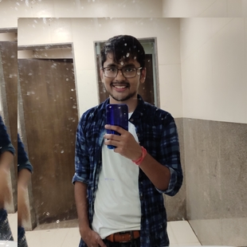

About me
Let me tell you a few things...

BIO
I am SAWAI Dhariwal.I am btech student at IIIT SURAT Electronic And Comunication Department .I was born and rise in Barmer Rajasthan.
I like to travel. I believe travelling gives you a new perspective to everything. You get to know a lot about the different cultures, the cuisines, their history, the language and all the small unique things every place has to offer.
DEVELOPER
Frontend Web developer
Front End web developer.i like to design frontend for app and wenbsite.
Programmer
languages
C,C++,javascript,html,css,bootstrap
,react,redux,mongodb
webworks
programer
personal portfolio
ToDo app